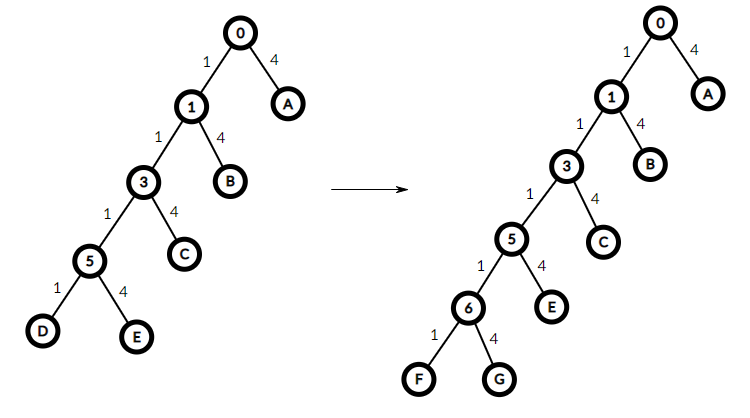

Project Euler 219
题目
Skew-cost coding
Let A and B be bit strings
(sequences of \(0\)’s and \(1\)’s).
If A is equal
to the leftmost length(A) bits of
B, then A is said to be a
prefix of B.
For example, \(00110\) is a prefix of \(\underline{00110}1001\), but not of \(00111\) or \(100110\). A prefix-free code of size \(n\) is a collection of \(n\) distinct bit strings such that no string is a prefix of any other. For example, this is a prefix-free code of size \(6\):
\[0000, 0001, 001, 01, 10, 11\]
Now suppose that it costs one penny to transmit a ‘\(0\)’ bit, but four pence to transmit a ‘\(1\)’.
Then the total cost of the prefix-free code shown above is \(35\) pence, which happens to be the cheapest possible for the skewed pricing scheme in question.
In short, we write \(\text{Cost}(6) = 35\).
What is \(\text{Cost}(10^9)\)?
解决方案
令\(N=10^9\)。将这些编码方式按照公共前缀，可以构成一棵二叉树，每一个叶节点代表着一种编码方式。那么，我们就使用贪心的思想，考虑找到一个当前花费（深度）\(c\)最小的叶节点，然后将其编码分别添加一个\(0\)和\(1\)，分别在这棵树上形成两个新的叶节点，花费分别为\(c+1,c+4\)。如下图所示。

最朴素的做法是使用优先队列直接对叶节点进行扩展，但是由于编码数\(N=10^9\)太大，因此考虑批量扩展，每次将花费为\(i\)的所有节点扩展出来。
考虑使用动态规划思想进行扩展。令状态\(c(i)(i\ge 0)\)表示最大花费不超过\(i\)的情况下，最多的编码数。不难写出如下状态转移方程：
\[ c(i)= \left \{\begin{aligned} &1 & & \mathrm{if\quad} i\le 3 \\ &c(i-1)+c(i-4) & & \mathrm{else} \end{aligned}\right. \]
对于方程的最后一行，这种操作相当于将一棵深度为\(i-1\)的树，将其前面所有编码的前面都添加一个\(0\)，然后再将一棵深度为\(i-4\)的树，再在这些编码的前面都添加一个编码\(1\)，从而将这两棵树合并成一棵高度为\(i\)的树。由于原来的两棵树已经无法在保持高度的情况下再扩展新的叶节点，因此这棵新树也不能扩展新的叶节点。
令状态\(s(i)(i\ge 0)\)表示高度为\(i\)的树，叶节点的个数已经扩展到了上限，也就是\(c(i)\)，这时的编码总花费数。那么不难写出如下状态转移方程：
\[ s(i)= \left \{\begin{aligned} &0 & & \mathrm{if\quad} i\le 3 \\ &s(i-1)+s(i-4)+c(i-1)+4c(i-4) & & \mathrm{else} \end{aligned}\right. \]
对于方程的最后一行，\(s(i-1)+s(i-4)\)则是原来两棵树的花费总和。现在要为深度为\(i-1\)的树的全部编码前面都添加一个\(0\)，增加了花费\(c(i-1)\)；并为深度为\(i-4\)的树的全部编码前面都添加一个\(1\)，增加了花费\(4c(i-4)\).
令\(m\)为最大的数使得\(c(m)\le N\)，那么对于一棵高度为\(m\)，已经有\(c(m)\)个节点的树，如果再扩展叶节点，那么树的高度必须要增加。此时我们还需要扩展\(N-c(m)\)次。那么考虑那些高度为\(m-3\)的叶节点，将它们扩展后就变成了两个深度为\(m-2\)和\(m+1\)的两个叶节点。而每扩展一次，花费就增加\(m+1+1\).
因此，最终答案为\(s(m)+(N-c(m))\cdot(m+2)\).
代码
1 | N = 10 ** 9 |